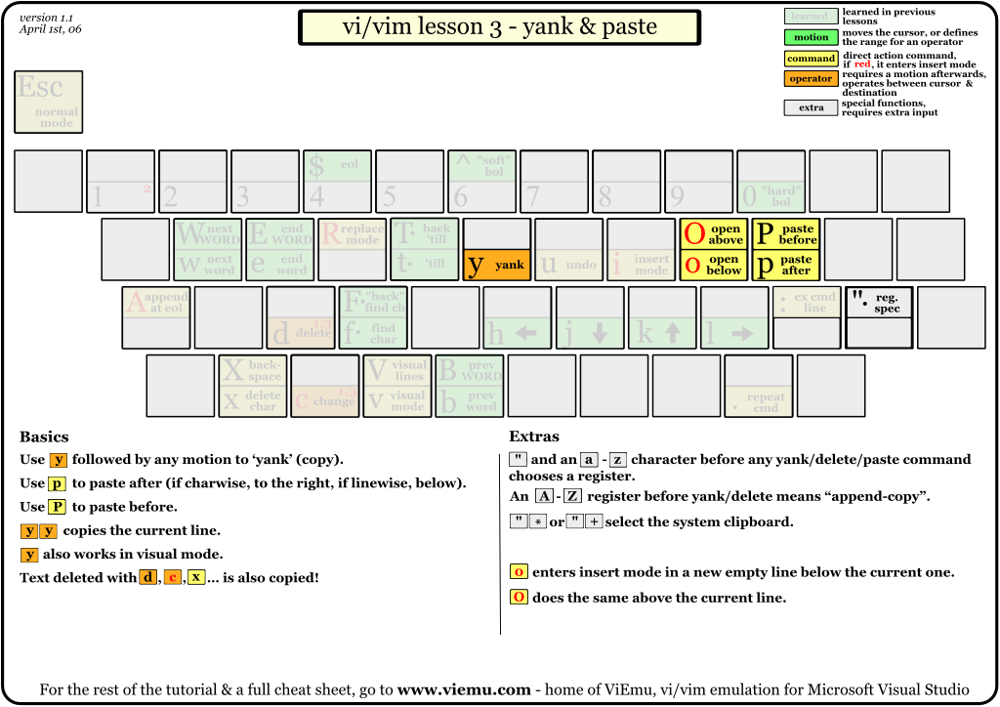
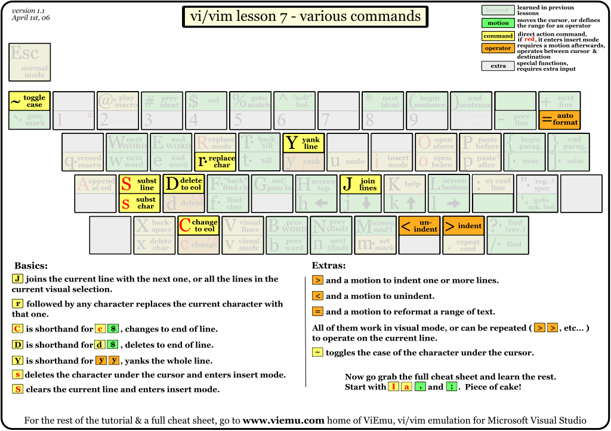
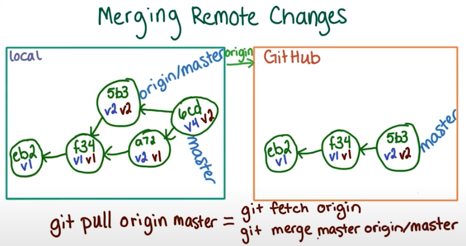
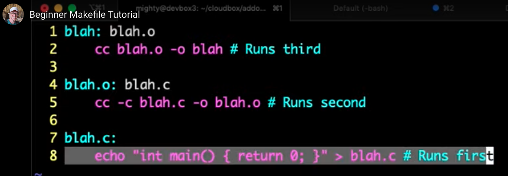
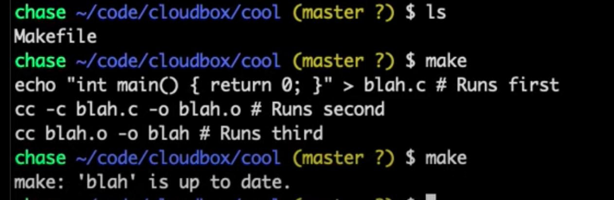

Unix/Shell FAQs
Contents
Unix/Shell FAQs#
vi commands#
Editing#
Add same string at the beginning of each line:
:%s/^/helloworld/Undo last commands:
:uUndo last 2 commands:
:2uCopy all the lines in buffer:
:%y+Delete all the lines in file:
:1,\$dDelete lines from cursor to specific line number:
:.,10dDelete current line:
:.dExit without saving:
:q!Save and exit:
:wqInsert mode:
:ICopy next 2 lines:
2yyPaste copied items:
pCopy/Paste specific line numbers:
yank those lines in register:
:364,757yif you want to copy those lines and paste to some certain line, t is your friend. for example:
:364,757t2- will copy those lines to under 2nd line.if you want to copy them to right under your current line:
:364,757t.Undo last command:
uUndo last 2 commands:
2uFor tab characters that appear 4-spaces-wide:
set tabstop=4If you’re using actual tab character in your source code you probably also want these settings (these are actually the defaults, but you may want to set them defensively):
set softtabstop=0 noexpandtabFinally, if you want an indent to correspond to a single tab, you should also use:
set shiftwidth=4For indents that consist of 4 space characters but are entered with the tab key:
set tabstop=8 softtabstop=0 expandtab shiftwidth=4 smarttabPermanent setting in
~/.vimrc::set numberComment in ~/.vimrc
" This is commentto search for all occurences, with highlight
set hlsearch
/\cGoogle
set nohlsearch
Search and replace
:[range]s/{pattern}/{string}/[flags] [count]To search for the first occurrence of the string ‘foo’ in the current line and replace it with ‘bar’, you would use:
:s/foo/bar/To replace all occurrences of the search pattern in the current line, add the g flag:
:s/foo/bar/gIf you want to search and replace the pattern in the entire file, use the percentage character % as a range. This character indicates a range from the first to the last line of the file:
:%s/foo/bar/gIf the {string} part is omitted, it is considered as an empty string, and the matched pattern is deleted. The following command deletes all instances of the string ‘foo’ in the current line:
:s/foo//gInstead of the slash character (/), you can use any other non-alphanumeric single-byte character except as a delimiter. This option is useful when you have the ‘/’ character in the search pattern or the replacement string:
:s|foo|bar|To confirm each substitution, use the c flag:
:s/foo/bar/gcYou can also use regular expressions as a search pattern. The command bellow replaces all lines starting with ‘foo’ with ‘Vim is the best’:
:%s/^foo.*/Vim is the best/gcBy default, the search operation is case sensitive; searching for “FOO” will not match “Foo”. To ignore case for the search pattern, use the i flag:
:s/Foo/bar/giTo substitute all occurrences of ‘foo’ to ‘bar’ in all lines starting from line 3 to line 10 you would use(range is inclusive):
:3,10s/foo/bar/gThe dot . character indicates the current line and $ - the dollar sign the last line. To substitute ‘foo’ in all lines starting from the current line to the last one:
:.,$s/foo/bar/To search for a whole word, type < to mark the beginning of a word, enter the search pattern, type > to mark the end of a word:
:s/\<foo\>/bar/Comment lines (add # before the line) from 5 to 20:
:5,20s/^/#/Uncomment lines from 5 to 20, revert the previous changes:
:5,20s/^#//Replace all instances of ‘apple’, ‘orange’, and ‘mango’ with ‘fruit’:
:%s/apple\|orange\|mango/fruit/gRemove trailing whitespace at the end of each line:
:%s/\s\+$//e
To run shell commands while on vim use
:!lsTo run shell commands and copy the result of executed command into opened vim document
:.!lsTo list directory names only:
ls -d */To try different characters:
digTo print foreign characters:
Go in insert mode
a
TypeCtrl k
Type in the combination of foreign letters learnt from dig, and press enter
vi settings#
set colorscheme
:colorscheme ronlist colorschemes available
ls -l /usr/share/vim/vim*/colors/list current colorscheme
:echo g:colors_nameturn syntax highlight
:syntax ondelete characters from the cursor to the end of the line
:d$repeat characters(Hello) in a line
:2Hello-Escswitch from vim to console
When inside Vim editing my Python scripts, I simply hit Ctrl Z so as to return in console mode
Run my script with command \$ python my_script.py
When done, I enter \$ fg in the command line and that gets me back inside Vim, in the state I was before hitting Ctrl Z. (fg as in foreground)
download and extract file using wget command
wget -c http://xyz.com.tar.gz | tar -xz
go to previous commands entered
Type : and press up or down arrow
q: will show you command history in Vim.
q/ will show you history of searches.
And must importantly, :q will quite the mode.
Set line number
:set numberor:set nuSet no line number
:set nonumberor:set number!or:set nu!Set relative line number
:set relativenumberor:set rnu
vi extras#
Take input from commands and put it into new file
echo "Test this" | vim -# Reading from standard input
Other way would be
vim '+ :.! echo "Test this" '
vim "+ <commands>" <file>
marks in vim
To add mark for row
m<id>for examplema, a is the markTo delete mark for row
dm<id>for exampledma, a is the markto view all marks
:marks
folds in vim
vi csv#
view csv on shell
column -s, -t < somefile.csv | less -#2 -N -S
Shell commands#
Mac specific#
Search for files at command line with mdfind(Spotlight)
mdfind -name Filename
Search for string from another search result
mdfind -name Filename | grep "stri2"
find files/dir#
find all file recursively in current working directory
find . -type f
find all directory recursively in current working directory
find . -type d
find contents of files in current directory recursively
find ./learnings -type f -exec grep -H 'xgboost' {} \;
find all files recursively in current working directory with case sensitive pattern and redirect into a file
find . -type f -name "*Boost*"
find all files recursively in current working directory with case insensitive pattern and redirect into a file
find . -type f -iname "*Boost*"
find . -type f > somefile.txt
copy buffer from/into mac terminal
pbcopy/pbpaste
find all files recursively in current working directory and redirect into buffer
find . -type f | pbcopy
find text in all files in current folder recursively
grep -r 'vector'
find text in all files in current folder recursively, only file names
grep -rl 'vector'
find text in all files in current folder recursively, only file names, only unique names
grep -rle 'vector'
find text in all files in current folder recursively, only file names, only unique names, only cpp files
grep --include="*.cpp" -rle 'vector' .
Shell#
How to check which sh am i using
$SHELL --version
Print environment details
printenv
List processes run
ps -elf
Important folder/file locations#
Python packages installation directory
ls ~/opt/anaconda3/envs/reco/lib/python3.8/site-packages/
ls#
List directory only
ls -d */ # or
ls -l | grep '^d' # or
ls -l | egrep '^d'
List last edited files in subdirectory recursively
ls -lRt | less
File Content Edits#
Delete odd/even lines from file
keep odd lines
sed 'n; d' infile > outfilekeep even lines
sed '1d; n; d' infile > outfileto remove the even numbered lines from the file(The -i option would cause the changes to be saved to the file in-place)
sed -i '0~2d' filenameFor removing odd numbered lines
sed -i '1~2d' filenameUsing awk - NR is the current line number
awk 'NR%2==0' infile > outfilefind the 3rd word in a sentence
string1="this is just a dummy string"
echo "$string1" | awk -F ' ' '{print $3}'
find the 2nd word in all sentences in a file
awk -F ' ' '{print $2}' testFile3 > testFile4
Disk usage#
Find the folder size of one folder in human readable format
du -sh directory_name
Find the folder size of all folders in human readable format
du -hd1 directory_name
Find all the big folders of particular size upto a limit
du -hax gitrepos/dlwpt-code | grep '[0-9]M' | sort -nr
Process/Port#
Find information about specific port(where 3000 is your current port in use)
lsof -i :3000
Find information about specific pid
ps ax | grep
vi cheat sheet#
graphical cheat sheet#

basic editing#

operators and repetitions#

yank and paste#

searching#

marks and macros#

various motions#

various commands#

iTerm2#
Vertical Split:
cmd + dHorizontal split:
cmd + shift + dTo navigate between the vertical splits in left/right or up/down fashion:
cmd + [ and cmd + ]Alt/Option: Mouse reporting will be disabled. If you’re using vim and you can’t make a selection, try holding down the alt key and see if that fixes it.Alt + Cmd: Make a rectangular selection.Shift: Extend an existing selection.Alt + Shift: Extend a rectangular selection.Cmd: Make a discontinuous selection
Cassandra#
To install Cassandra, java 8 or 11 is prerequisite
To install Cassandra
brew install cassandra
To check status of Cassandra
brew info cassandra
To start Cassandra
brew services start cassandra
To stop Cassandra
brew services stop cassandra
Cassandra file locations
System file (INFO level):
/usr/local/var/log/cassandra/system.logDebug file (DEBUG level):
/usr/local/var/log/cassandra/debug.logProperties file:
/usr/local/etc/cassandra/cassandra.yamlData files:
/usr/local/var/lib/cassandra/data
Cassandra executables location
cd /usr/local/opt/cassandra/bin/
Install cassandra-driver
pip install cassandra-driver
Start CQLSH
cqlsh localhost
PySpark#
Renamed config.json to be able to switch to different venv
cd ~/.jupyter/
mv jupyter_notebook_config.json jupyter_notebook_config.json.bkp
Create new venv
python --version
3.8.8
conda create --name reco python=3.8.8
conda activate reco
As a pre-requisite to installing the dependencies, if using Conda, make sure that Anaconda and the package manager Conda are both up to date
conda update conda -n root
conda install anaconda
since it is a new venv, otherwise conda update anaconda
pip install pyspark
Successfully installed py4j-0.10.9.3 pyspark-3.2.1
brew tap adoptopenjdk/openjdk
brew install --cask adoptopenjdk8
NOTE Spark requires Java version 8 or 11. We support Spark versions 3.0 and 3.1, but versions 2.4+ with Java version 8 may also work.
brew install --cask adoptopenjdk11
If you want to install/manage multiple version then you can use ‘jenv’:
echo 'export PATH="$HOME/.jenv/bin:$PATH"' >> ~/.bash_profile
echo 'eval "$(jenv init -)"' >> ~/.bash_profile
source ~/.bash_profile
This will change the venv to base. Switch/Activate the environment
jenv doctor
No JAVA_HOME set
Add the installed java to jenv
jenv add /Library/Java/JavaVirtualMachines/adoptopenjdk-8.jdk/Contents/Home
jenv add /Library/Java/JavaVirtualMachines/adoptopenjdk-11.jdk/Contents/Home
jenv versions
Configure the java version which you want to use:
jenv global 11
jenv versions
For v11
echo 'export JAVA_HOME=$(/usr/libexec/java_home -v11)' >> ~/.bash_profile
or for v1.8
echo 'export JAVA_HOME=$(/usr/libexec/java_home -v1.8)' >> ~/.bash_profile
If
jenv doctornot set, use
echo 'eval "$(jenv init -)"' >> ~/.zshrc
Test
java --versionorwhich javaSetup PySpark
RECO_ENV=$(conda env list | grep reco | awk '{print $NF}')
mkdir -p $RECO_ENV/etc/conda/activate.d
mkdir -p $RECO_ENV/etc/conda/deactivate.d
Then, create the file $RECO_ENV/etc/conda/activate.d/env_vars.sh and add:
#!/bin/sh
RECO_ENV=$(conda env list | grep reco | awk '{print $NF}')
export PYSPARK_PYTHON=$RECO_ENV/bin/python
export PYSPARK_DRIVER_PYTHON=$RECO_ENV/bin/python
unset SPARK_HOME
This will export the variables every time we do
conda activate reco. To unset these variables when we deactivate the environment, create the file $RECO_ENV/etc/conda/deactivate.d/env_vars.sh and add:
#!/bin/sh
unset PYSPARK_PYTHON
unset PYSPARK_DRIVER_PYTHON
Register environment as kernel in Jupyter
python -m ipykernel install --name reco --display-name "Python (reco)"
Clone recommenders repo
git clone https://github.com/microsoft/recommenders
Change root directory of recommenders git folder where
setup.pysitsInstall recommenders and additional package setups
pip install -e .
To go back to older java version
jenv local 1.8
llvm/clang#
Install llvm#
To use the bundled libc++ please add the following LDFLAGS:
LDFLAGS="-L/usr/local/opt/llvm/lib -Wl,-rpath,/usr/local/opt/llvm/lib"
llvm is keg-only, which means it was not symlinked into /usr/local,
because macOS already provides this software and installing another version in
parallel can cause all kinds of trouble.
If you need to have llvm first in your PATH, run:
echo 'export PATH="/usr/local/opt/llvm/bin:$PATH"' >> ~/.zshrc
For compilers to find llvm you may need to set:
export LDFLAGS="-L/usr/local/opt/llvm/lib"
export CPPFLAGS="-I/usr/local/opt/llvm/include"
clang from Xcode vs llvm#
Cause
Thanks for the comments - the errors above are an indication of a Clang version that was built without module support. This is what Xcode comes with, i.e. by running xcode-select –install in a terminal.
Solution
As suggested the solution has been to install Clang thru HomeBrew which is done as follows (tested on macOS Monterey):
brew install llvm
Clang gets installed to /opt/homebrew/opt/llvm/bin/clang++. Confirm the running version as shown below:
Homebrew clang version 13.0.0
Target: arm64-apple-darwin21.1.0
Thread model: posix
InstalledDir: /opt/homebrew/opt/llvm/bin
Which is a different build from the Xcode system-wide default version:
Apple clang version 13.0.0 (clang-1300.0.29.3)
Target: arm64-apple-darwin21.1.0
Thread model: posix
InstalledDir: /Library/Developer/CommandLineTools/usr/bin
(base) chandrasingh@Chandras-MBP slidingWindow % clang –version
Homebrew clang version 13.0.1
Target: x86_64-apple-darwin21.2.0
Thread model: posix
InstalledDir: /usr/local/opt/llvm/bin
Run clang with different flags#
clang++ -Wall -std=c++11 SubArrayAverage.cpp -o SubArrayAverage
Jupyter Notebook#
Convert notebook into interactive slide
jupyter nbconvert slides-in-a-notebook.ipynb –to slides –ServePostProcessor.port=8910 –post serve
this uses reveal.js
Convert notebook into html with toc
jupyter nbconvert –to html_toc FILE.ipynb
Launch notebook in other env
cd ~/anaconda/workingDir/
jupyter notebook –port 5656
Running without password
../../bin/jupyter notebook –port 5657 –ip=’*’ –NotebookApp.token=’’ –NotebookApp.password=’’
Jupyter magic line and cell commands
terminal commands
! ls -l ../.
Help on any python command
??pd.merge
Print script with code highlighting and syntax
Print specific lines of a script with code highlighting and syntax
Print script without code highlighting and syntax
! cat script.py
Read this
List of keyboard shortcuts
Cmd + Shift + P
IPython Magic – %run: Execute python code
How to install nbconvert html_toc
conda install -c conda-forge jupyter_nbextensions_configurator
conda install -c conda-forge “nbconvert=5.6.1” # This version only works
git#
Check git version
git version
Check user details
git config --list
Check git configuration file
cat ~/.gitconfig
Change git configuration
git config --global user.name "Chandra"
To clone a repository
git clone https://github.com/chandrabsingh/learnings
To check status of files
Go inside the directory
git status
Lifecycle of status of file

Initialize a repository
git initthis creates .git file in the folder
Local or Remote
Add files
touch index.html
git add index.html
this adds the file in unstaged area
Delete files from git after deleting from fs
git ls-files --deleted -z | xargs -0 git rm
To commit a files
git commit -m "Commit message"
History of commits
git log
New files added are called untracked files. After updating file, it needs to be added as well
git add index.html
To add all files at once
git add .
How to undo git add before commit
git reset filename
How to roll back
git log
Copy the hash of the version you want to
git checkout xyz
To list local branches
git branch
To list remote branches
git branch -r
To list both local and remote branches
git branch -a
To create a branch
git branch colors
To merge branch into master
Be on the master
git merge colors
This updates colors changes onto master
push changes
This will lead to changes onto the remote repository from local repository
pull changes
This will lead to changes from the remote repository onto local repository
How does pull work
git pull origin master
is equivalent to
git fetch origin
git merge master origin/master

How to compare two branches
git diff origin/master master
Moving files
Git does not explicitly track file changes
git mv file_from file_to
Better git log with git ls
Add this to ~./gitconfig[alias] ls = log –graph –abbrev-commit –decorate –color=always –date=relative –format=format:’%C(bold blue)%h%C(reset) - %C(bold green)(%ar)%C(reset) %C(white)%s%C(reset) - %C(dim red)%an%C(reset)%C(bold yellow)%d%C(reset)’ –all
Delete both from local and remote repository
git rm wrong.txt
Delete from remote repository but keep locally
git rm --cached wrong.txt
conda#
Display Conda environment information
List all existing environments
(base) username % conda env list
Create a new environment
(base) username % conda create –name project-env python=3.7
Activate your new environment
(base) username % conda activate project-env (project-env) username %
Display all packages in this environment
(project-env) username ~ % conda list
Display revision history
(project-env) username ~ % conda list –revision
Change your active environment
(project-env) username ~ % conda activate base (base) username ~ %
Deactivate your active environment
(project-env) username ~ % conda deactivate (base) username ~ %
pip#
Install specific version of package
pip install "SomeProject==1.4"
Install using requirements file
pip install -r requirements.txt
Mac Services#
list all services
launchctl list
This command installs/add a service:
launchctl load /Library/LaunchDaemons/com.ServiceExample.plist
This command enable a service to auto run after installed:
launchctl enable system/com.ServiceExample
This command disable a installed service from auto-running:
launchctl disable system/com.ServiceExample
This command start a service:
launchctl start system/com.ServiceExample
This command stop a service:
launchctl stop system/com.ServiceExample
This command remove a service:
launchctl unload /Library/LaunchDaemons/com.ServiceExample.plist
This command force execution of a recent loaded service:
launchctl kickstart -p /Library/LaunchDaemons/com.ServiceExample.plist
This command Stops and Disable a running service
launchctl bootout system/com.ServiceExample
Makefile#
 pytest#
pytest --help | lessCheatSheet
docker#
List all running processes
docker container ls
docker ps
Stop process
docker stop <containerid>
Attach local standard input, output, and error streams to a running container
docker container attach
Create a new image from a container’s changes
docker container commit
Copy files/folders between a container and the local filesystem
docker container cp
Create a new container
docker container create
Inspect changes to files or directories on a container’s filesystem
docker container diff
Run a command in a running container
docker container exec
Export a container’s filesystem as a tar archive
docker container export
Display detailed information on one or more containers
docker container inspect
Kill one or more running containers
docker container kill
Fetch the logs of a container
docker container logs
List containers
docker container ls
Pause all processes within one or more containers
docker container pause
List port mappings or a specific mapping for the container
docker container port
Remove all stopped containers
docker container prune
Rename a container
docker container rename
Restart one or more containers
docker container restart
Remove one or more containers
docker container rm
Run a command in a new container
docker container run
Start one or more stopped containers
docker container start
Display a live stream of container(s) resource usage statistics
docker container stats
Stop one or more running containers
docker container stop
Display the running processes of a container
docker container top
Unpause all processes within one or more containers
docker container unpause
Update configuration of one or more containers
docker container update
Block until one or more containers stop, then print their exit codes
docker container wait
Compound operations#
Extract file names from ls -l
ls -l cs229_ml/*.ipynb | tr -s ' ' | cut -d " " -f 9
Extract file names from ls and append text at the beginning
ls -l cs229_ml/*.ipynb | tr -s ' ' | cut -d " " -f 9 | sed 's/^/ - file:/g'
Extract file names from ls and append text at the beginning and remove last 6 characters from end
ls -l cs229_ml/*.ipynb | tr -s ' ' | cut -d " " -f 9 | sed 's/^/ - file:/g' | sed -r 's/.{6}$//'